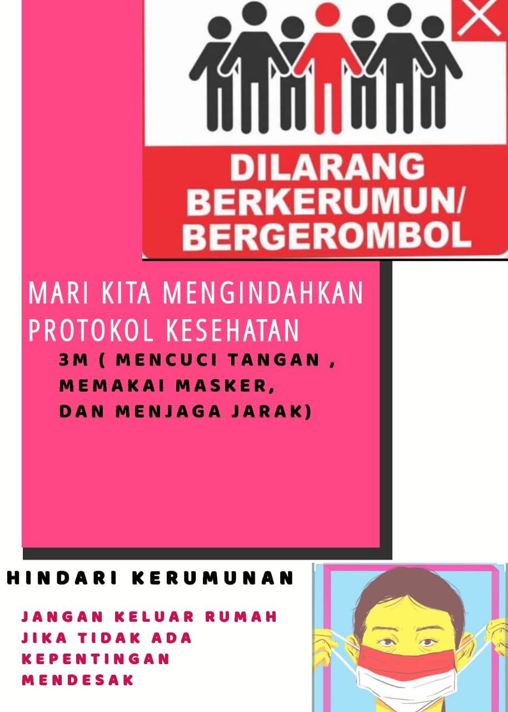

Larangan Berkumpul Untuk Mencega Covid19

Sehubung surat edaran dari Kapolri Republik Indonesia yang menyatakan larangan berbagai jenis pertemuan dan kegiatan yang melibatkan banyak orang dalam situasi seperti sekarang, Pemkab berau sudah menjalankan maklumat ini. Kapolres Berau, baru-baru ini telah membatalkan sejumlah kegiatan yang melibatkan banyak orang demi mencegah penyebaran Coronavirus yang kian merebak.
Kapolres mengimbau masyarakat untuk tidak beraktivitas di luar rumah kecuali dalam situasi-situasi tertentu, selain itu kapolres juga menghimbau masyarakat agar tidak atau mengadakan acara yang melibatkan banyak orang. Larangan berkumpul ini termasuk juga menggelar resepsi pernikahan. Larangan ini berlangsung sampai kondisi sudah kondusif. Menurut kapolres, masyarakat bisa dibilang kooperatif dalam hal ini. Mereka sadar akan kesehatan mereka.
Untuk menjaga kondusifnya lingkungan, kapolres Berau sudah berupaya menjaga kebersihan dengan mewajibkan pengecekan suhu tubuh ketika memasuki kantor-kantor pemerintahan dan tempat lain, selain itu juga menyediakan hand sanitizer di segala penjuru tempat, hingga melakukan pengawasan terhadap penimbunan alat kesehatan maupun bahan pangan. Menurutnya, ia juga siap apabila diberi perintah untuk membubarkan massa yang masih berkumpul di luar.